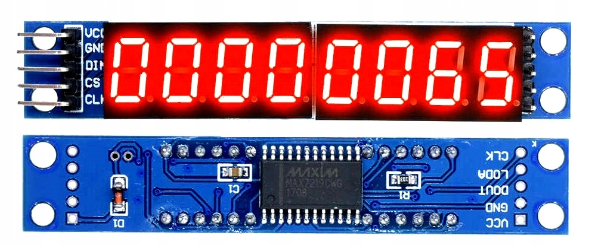
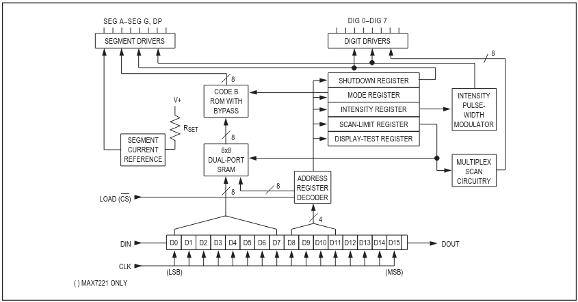
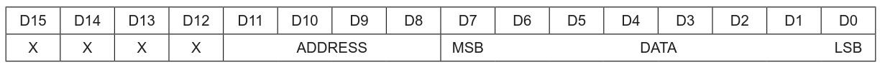
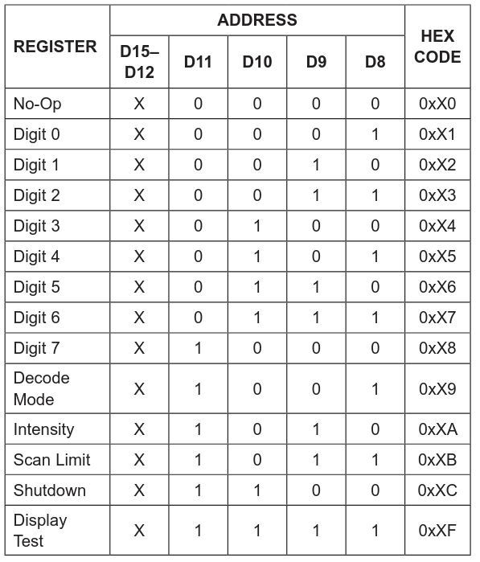
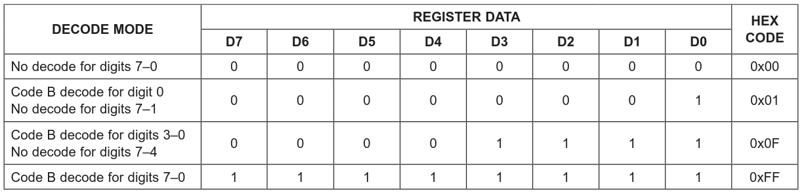
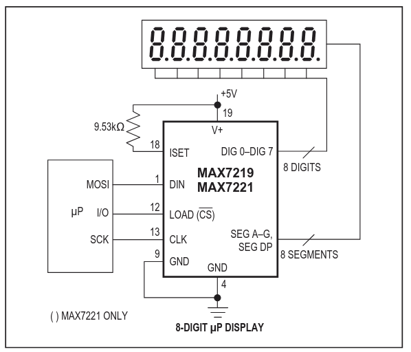
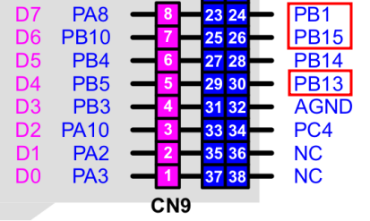

LED Display 7219 #
Modul 7-segmentového displeja je riadený obvodom MAX7219/MAX7221. Komunikácia s displejom je pomocou zbernice SPI, radič displeja podporuje sériové reťazenie obvodov na zbernici SPI (Daisy-Chain).
{kind=link}

Obr. 41 Modul displeja.#
Popis #
Radič displeja MAX7219 umožňuje pripojenie 8-znakového 7-segmentového displeja so spoločnou katódou, sĺpcového LED displeja alebo 64 samostatných LED. Obvod obsahuje BCD dekóder pre 7-segmentové znaky, obvody pre multiplexovanie znakov displeja, riadenie jasu a statickú pamäť RAM 8x8 pre každý znak displeja. Riadnie displeja umožňuje adresovať každý znak displeja individuálne, bez potreby prepísania obsahu celého displeja. Obvod je k mikroprocesoru pripojený pomocou rozhrania SPI s maximálnou frekvenciou hodím 10MHz.
{kind=link}

Obvod obsahuje 16-bitový posuvný register, ktorého obsah je po naplnení z rozhrania SPI dekódovaný podľa nasledujúceho formátu
{kind=link}

Obr. 43 Sériový formát dát v posuvnom registri.#
Popis polí vo formáte dát
D15 … D12 - nepoužité bity
D11 … D08 - adresa registru alebo znaku
D07 … D00 - dáta pre register alebo adresovaný znak
Adresné bity (D11 … D08) majú nasledujúci význam
{kind=link}

Obr. 44 Dekódovanie adresných bitov.#
Popis registrov
No-Op - používa sa pri sériovom radení registrov, kedy v sekvencii dát chceme osloviť niektorý z radičov a požadujeme, aby ostatné nereagovali
Digit 0 … Digit 7 - adresa znaku
Decode Mode - nastavenie dekódovania dát pre zobrazenie znaku na displeji v BCD kóde alebo priamym riadením LED
Intensity - nastavenie jasu displeja
Scan Limit - počet zobrazovaných znakov
Shutdown - zhasnutie displeja a prechod do módu s malou spotrebou
Dáta pre register Decode Mode určujú formát dekódovania znakov. Hodnota 0xFF nastavuje dekódovanie znakov v BCD kóde, hodnote 0x00 priame zobrazenie LED.
{kind=link}

Obr. 45 Nastavenie typu dekódovania dát pre znaky displeja.#
Zapojenie displeja #
Štandardné zapojenie modulu podľa doporučenia výrobcu ja na obrázku.
{kind=link}

Obr. 46 Zapojenie displeja.#
Príklad pripojenie modulu displeja ku kitu NUCLEO-64.
DIN -> PB15
CLK -> PB13
CS -> PB1
+5V
GND
{kind=link}

Obr. 47 Pripojenie modulu displeja.#
Programovanie #
Pre obsluhu modulu 7-segmentového displaje je vytvorená knižnica lib_max7219
Zdrojový kód knižnice
1'''
2MicroPython kniznica pre riadenie modulu 7-segmentového displeja
3----------------------------------------------------------------
4
5Upravené s pouzitím nasledujucich zdrojov
6
7zdroj: MicroPython driver for MAX7219 with 7-segment modules
8link: https://github.com/JennaSys/micropython-max7219
9autor: John Sheehan
10mail: jennasyseng@gmail.com
11licencia:MIT
12
13zdroj: Segmented LED Display - ASCII Library
14link: https://github.com/dmadison/LED-Segment-ASCII
15autor: Dave Madison
16licencia:MIT
17
18
19Pripojenie modulu ku kitu NUCLEO-64:
20
21DIN -> PB15
22CLK -> PB13
23CS -> PB1
24+5V
25GND
26'''
27
28from pyb import Pin, SPI
29import time
30
31# konfiguracia SPI
32SPI_BUS = 2
33SPI_BAUDRATE = 100000
34SPI_CS = 'PB1' # D3
35
36# konfiguracia displeja
37MAX7219_DIGITS = 8
38
39MAX7219_REG_NOOP = 0x0
40MAX7219_REG_DIGIT0 = 0x1
41MAX7219_REG_DIGIT1 = 0x2
42MAX7219_REG_DIGIT2 = 0x3
43MAX7219_REG_DIGIT3 = 0x4
44MAX7219_REG_DIGIT4 = 0x5
45MAX7219_REG_DIGIT5 = 0x6
46MAX7219_REG_DIGIT6 = 0x7
47MAX7219_REG_DIGIT7 = 0x8
48MAX7219_REG_DECODEMODE = 0x9
49MAX7219_REG_INTENSITY = 0xA
50MAX7219_REG_SCANLIMIT = 0xB
51MAX7219_REG_SHUTDOWN = 0xC
52MAX7219_REG_DISPLAYTEST = 0xF
53
54# 7 Segment bit order: DP-G-F-E-D-C-B-A
55char_map = {
56 ' ': 0b00000000,
57 '!': 0b10000110,
58 '"': 0b00100010,
59 '#': 0b01111110,
60 '$': 0b01101101,
61 '%': 0b11010010,
62 '&': 0b01000110,
63 "'": 0b00100000,
64 '(': 0b00101001,
65 ')': 0b00001011,
66 '*': 0b00100001,
67 '+': 0b01110000,
68 ',': 0b00010000,
69 '-': 0b01000000,
70 '.': 0b10000000,
71 '/': 0b01010010,
72 '0': 0b00111111,
73 '1': 0b00000110,
74 '2': 0b01011011,
75 '3': 0b01001111,
76 '4': 0b01100110,
77 '5': 0b01101101,
78 '6': 0b01111101,
79 '7': 0b00000111,
80 '8': 0b01111111,
81 '9': 0b01101111,
82 ':': 0b00001001,
83 ';': 0b00001101,
84 '<': 0b01100001,
85 '=': 0b01001000,
86 '>': 0b01000011,
87 '?': 0b11010011,
88 '@': 0b01011111,
89 'A': 0b01110111,
90 'B': 0b01111100,
91 'C': 0b00111001,
92 'D': 0b01011110,
93 'E': 0b01111001,
94 'F': 0b01110001,
95 'G': 0b00111101,
96 'H': 0b01110110,
97 'I': 0b00110000,
98 'J': 0b00011110,
99 'K': 0b01110101,
100 'L': 0b00111000,
101 'M': 0b00010101,
102 'N': 0b00110111,
103 'O': 0b00111111,
104 'P': 0b01110011,
105 'Q': 0b01101011,
106 'R': 0b00110011,
107 'S': 0b01101101,
108 'T': 0b01111000,
109 'U': 0b00111110,
110 'V': 0b00111110,
111 'W': 0b00101010,
112 'X': 0b01110110,
113 'Y': 0b01101110,
114 'Z': 0b01011011,
115 '[': 0b00111001,
116 '\\': 0b01100100,
117 ']': 0b00001111,
118 '^': 0b00100011,
119 '_': 0b00001000,
120 '`': 0b00000010,
121 'a': 0b01011111,
122 'b': 0b01111100,
123 'c': 0b01011000,
124 'd': 0b01011110,
125 'e': 0b01111011,
126 'f': 0b01110001,
127 'g': 0b01101111,
128 'h': 0b01110100,
129 'i': 0b00010000,
130 'j': 0b00001100,
131 'k': 0b01110101,
132 'l': 0b00110000,
133 'm': 0b00010100,
134 'n': 0b01010100,
135 'o': 0b01011100,
136 'p': 0b01110011,
137 'q': 0b01100111,
138 'r': 0b01010000,
139 's': 0b01101101,
140 't': 0b01111000,
141 'u': 0b00011100,
142 'v': 0b00011100,
143 'w': 0b00010100,
144 'x': 0b01110110,
145 'y': 0b01101110,
146 'z': 0b01011011,
147 '{': 0b01000110,
148 '|': 0b00110000,
149 '}': 0b01110000,
150 '~': 0b00000001
151}
152
153
154def get_char(char):
155 return char_map.get(str(char), char_map.get('_'))
156
157
158def get_char2(char):
159 # 7 Segment bit order: DP-A-B-C-D-E-F-G
160 bits = get_char(char)
161 tmp = '{:08b}'.format(bits)
162 return int(''.join(['0b', tmp[0], ''.join(reversed(tmp[1:]))]), 2)
163
164
165
166class SevenSegment:
167 def __init__(self, digits=8, scan_digits=MAX7219_DIGITS, baudrate=SPI_BAUDRATE, cs=SPI_CS, spi_bus=SPI_BUS, reverse=False):
168 """
169 Constructor:
170 `digits` should be the total number of individual digits being displayed
171 `scan_digits` is the number of digits each individual max7219 displays
172 `baudrate` defaults to 100KHz, note that excessive rates may result in instability (and is probably unnecessary)
173 `cs` is the GPIO port to use for the chip select line of the SPI bus - defaults to GPIO 0 / D3
174 `spi_bus` is the SPI bus on the controller to utilize - defaults to SPI bus 1
175 `reverse` changes the write-order of characters for displays where digits are wired R-to-L instead of L-to-R
176 """
177
178 self.digits = digits
179 self.devices = -(-digits // scan_digits) # ceiling integer division
180 self.scan_digits = scan_digits
181 self.reverse = reverse
182 self._buffer = [0] * digits
183 #self._spi = SPI(spi_bus, baudrate=baudrate, polarity=0, phase=0)
184 self._spi = SPI(spi_bus, SPI.CONTROLLER, baudrate=baudrate, polarity=0, phase=0, crc=None)
185 self._cs = Pin(cs, Pin.OUT, value=1)
186
187 self.command(MAX7219_REG_SCANLIMIT, scan_digits - 1) # digits to display on each device 0-7
188 self.command(MAX7219_REG_DECODEMODE, 0) # use segments (not digits)
189 self.command(MAX7219_REG_DISPLAYTEST, 0) # no display test
190 self.command(MAX7219_REG_SHUTDOWN, 1) # not blanking mode
191 self.brightness(7) # intensity: range: 0..15
192 self.clear()
193
194 def command(self, register, data):
195 """Sets a specific register some data, replicated for all cascaded devices."""
196 self._write([register, data] * self.devices)
197
198 def _write(self, data):
199 """Send the bytes (which should be comprised of alternating command, data values) over the SPI device."""
200 self._cs.off()
201 self._spi.write(bytes(data))
202 self._cs.on()
203
204 def clear(self, flush=True):
205 """Clears the buffer and if specified, flushes the display."""
206 self._buffer = [0] * self.digits
207 if flush:
208 self.flush()
209
210 def flush(self):
211 """For each digit, cascade out the contents of the buffer cells to the SPI device."""
212 buffer = self._buffer.copy()
213 if self.reverse:
214 buffer.reverse()
215
216 for dev in range(self.devices):
217 if self.reverse:
218 current_dev = self.devices - dev - 1
219 else:
220 current_dev = dev
221
222 for pos in range(self.scan_digits):
223 self._write([pos + MAX7219_REG_DIGIT0, buffer[pos + (current_dev * self.scan_digits)]] + ([MAX7219_REG_NOOP, 0] * dev))
224
225 def brightness(self, intensity):
226 """Sets the brightness level of all cascaded devices to the same intensity level, ranging from 0..15."""
227 self.command(MAX7219_REG_INTENSITY, intensity)
228
229 def letter(self, position, char, dot=False, flush=True):
230 """Looks up the appropriate character representation for char and updates the buffer, flushes by default."""
231 value = get_char2(char) | (dot << 7)
232 self._buffer[position] = value
233
234 if flush:
235 self.flush()
236
237 def text(self, text):
238 """Outputs the text (as near as possible) on the specific device."""
239 self.clear(False)
240 text = text[:self.digits] # make sure we don't overrun the buffer
241 for pos, char in enumerate(text):
242 self.letter(pos, char, flush=False)
243
244 self.flush()
245
246 def number(self, val):
247 """Formats the value according to the parameters supplied, and displays it."""
248 self.clear(False)
249 strval = ''
250 if isinstance(val, (int, float)):
251 strval = str(val)
252 elif isinstance(val, str):
253 if val.replace('.', '', 1).strip().isdigit():
254 strval = val
255
256 if '.' in strval:
257 strval = strval[:self.digits + 1]
258 else:
259 strval = strval[:self.digits]
260
261 pos = 0
262 for char in strval:
263 dot = False
264 if char == '.':
265 continue
266 else:
267 if pos < len(strval) - 1:
268 if strval[pos + 1] == '.':
269 dot = True
270 self.letter(pos, char, dot, False)
271 pos += 1
272
273 self.flush()
274
275 def scroll(self, rotate=True, reverse=False, flush=True):
276 """Shifts buffer contents left or right (reverse), with option to wrap around (rotate)."""
277 if reverse:
278 tmp = self._buffer.pop()
279 if rotate:
280 self._buffer.insert(0, tmp)
281 else:
282 self._buffer.insert(0, 0x00)
283 else:
284 tmp = self._buffer.pop(0)
285 if rotate:
286 self._buffer.append(tmp)
287 else:
288 self._buffer.append(0x00)
289
290 if flush:
291 self.flush()
292
293 def message(self, text, delay=0.4):
294 """Transitions the text message across the devices from left-to-right."""
295 self.clear(False)
296 for char in text:
297 time.sleep(delay)
298 self.scroll(rotate=False, flush=False)
299 self.letter(self.digits - 1, char)
Aplikačné rozhranie
Konštruktor:
SevenSegment(digits=8,
scan_digits=MAX7219_DIGITS,
baudrate=SPI_BAUDRATE,
cs=SPI_CS,
spi_bus=SPI_BUS,
reverse=False)
Metódy:
clear()
brightness(intensity)
command(register, data)
text(text)
number(val)
scroll(rotate, reverse, flush)
message(text, delay)
Inicializácia
Uložte knižnicu lib_max7219 do lokálneho pracovného adresáru a spustite nasledujúci skript, ktorý knižnicu nahrá do prostredia MicroPythonu.
mpremote fs mkdir lib
mpremote fs cp lib_max7219.py :./lib/lib_max7219.py
Príklady #
Komunikácia s displejom #
Základná komunikácia s displejom pomocou API funkcií.
from pyb import Pin
from time import sleep
from lib.lib_max7219 import *
display = SevenSegment(digits=8, scan_digits=8, cs='PB1', spi_bus=2, reverse=True)
display.clear()
sleep(0.5)
display.text("HELLO")
sleep(1)
display.number(3.14159)
sleep(1)
display.message("--- HELLO --- ")
sleep(1)
display.clear()
for i in range(32):
s = f'{i:2d}--{i:04x}'
display.text(s)
sleep(0.5)
Sériové zapojenie displejov #
Príklad komunikácie s displejmi zapojenými v sérii pomocou priameho zápisu do registrov. V programe nie je použité dekódovanie znakov pomocou dekóderu radiča, funkcia get_char2() prevádza kód znaku do kódu aktívnych segmentov pre zobrazenie na displeji.
from pyb import Pin
from time import sleep
from lib.lib_max7219 import *
display = SevenSegment(digits=16, scan_digits=8, cs='PB1', spi_bus=2, reverse=True)
display.clear()
display.brightness(5)
display.command(0x09,0x00) # mod bez dekodovania
s1 = ' 1234'
s2 = '--AHOJ--'
for x in range(8):
display._write([8-x, get_char2(s2[x]),
8-x, get_char2(s1[x])] )
sleep(0.25)